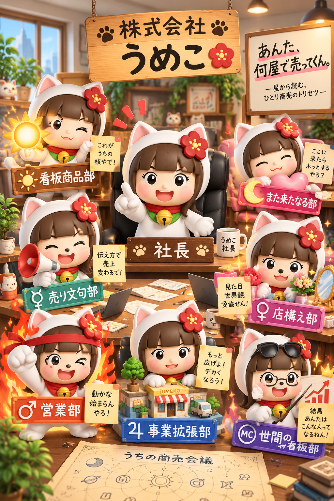

星から読む、自分株式会社の商売会議
あんた、
何屋で売ってくん。
星座を自分で調べる作業、廃止しました🤣
生年月日から6天体を自動計算。出生時刻＋出生地が分かればMCまで会議します。
日本生まれ（JST）向け。出生時刻が不明でも、同じ日の中で星座が変わらない天体は自動判定します。時刻によって星座が変わる場合は、勝手に決めず診断を止めます。
🏢 自分株式会社を設立
MC（世間の看板部）も出したい人
MCは出生時刻と出生地が分かる人だけ。都道府県→市区町村を選ぶだけでOK。分からない場合は空欄で6部署版にします。
市区町村の代表座標を使います。出生地の細かな住所入力は不要です。
入力内容はこのページ内の計算だけに使用し、localStorage等には保存しません。